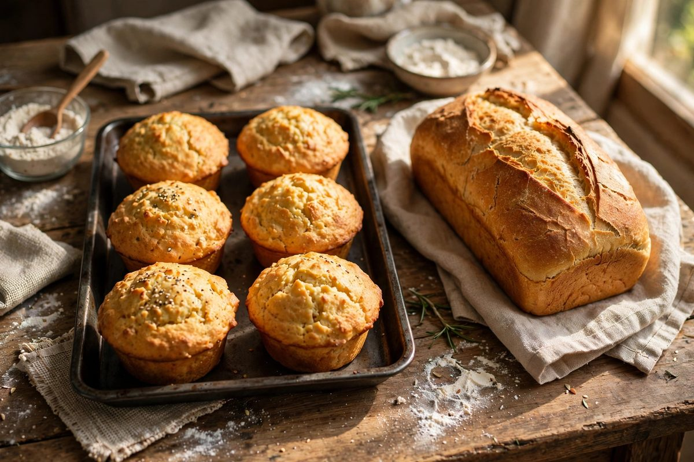
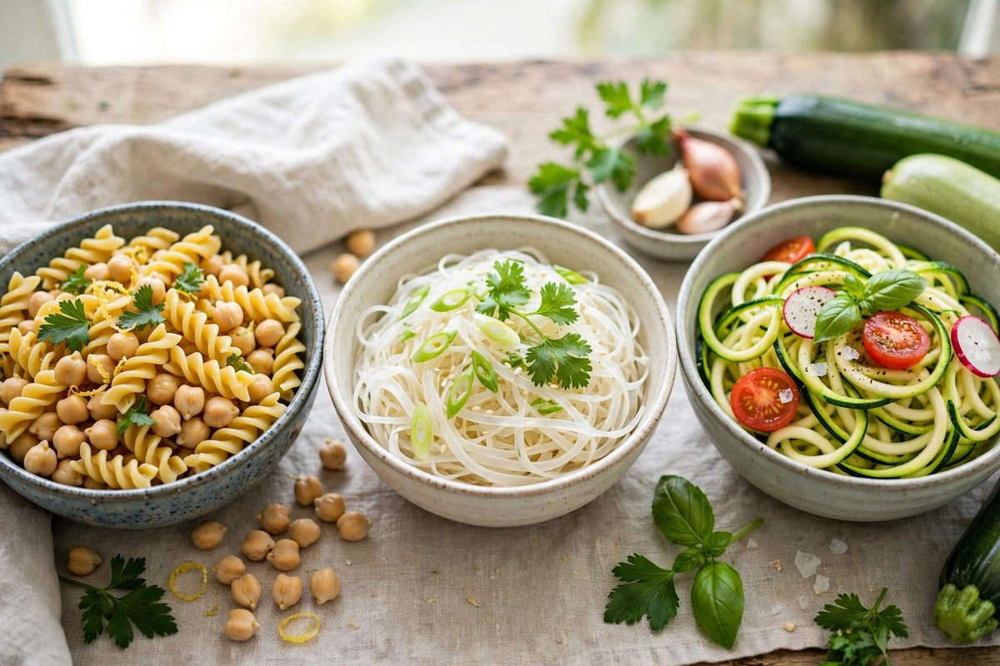
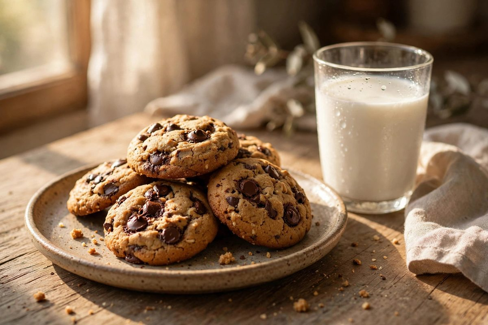
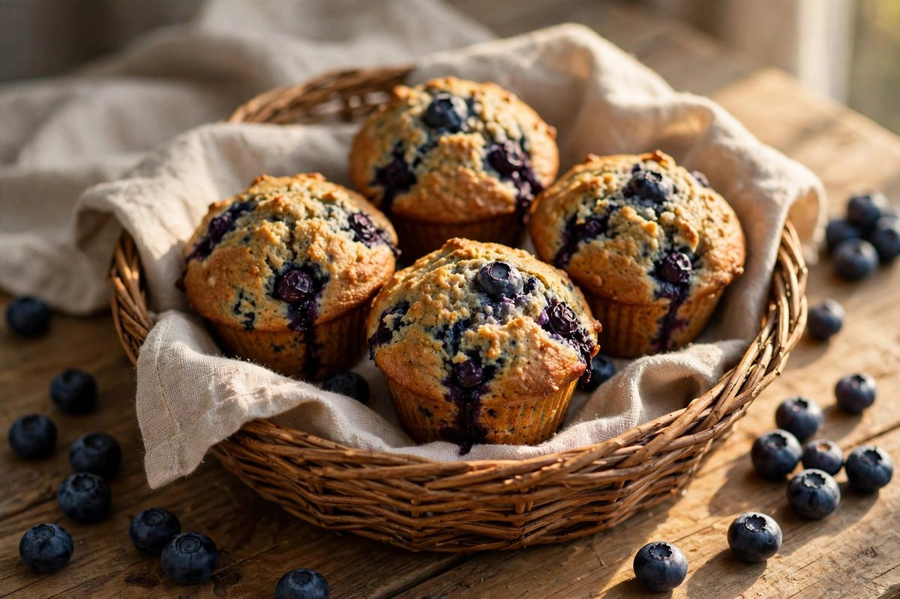
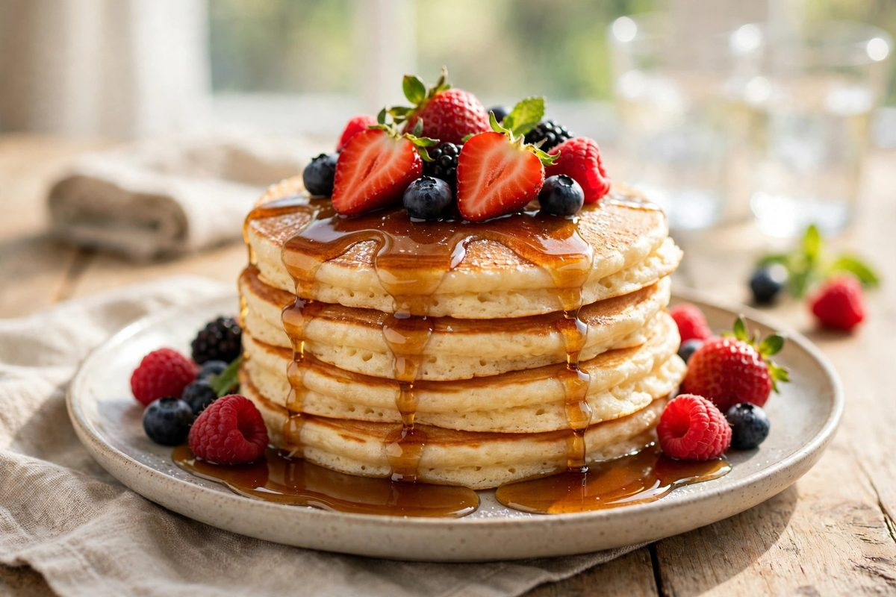
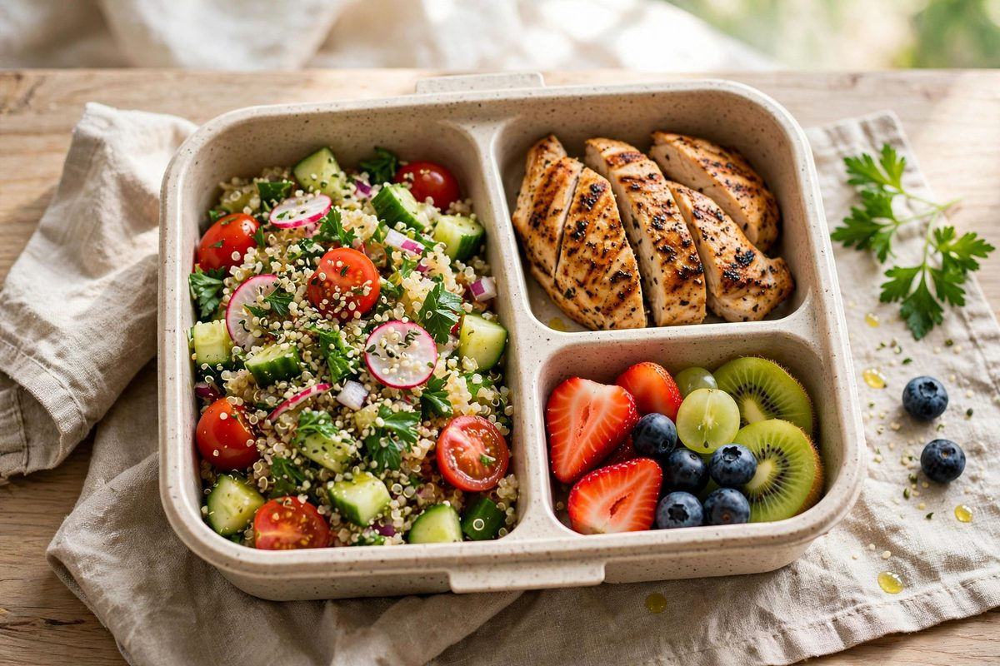
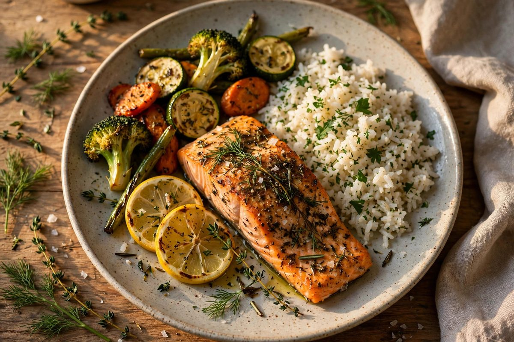
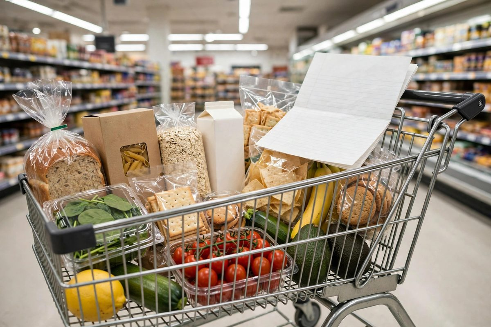
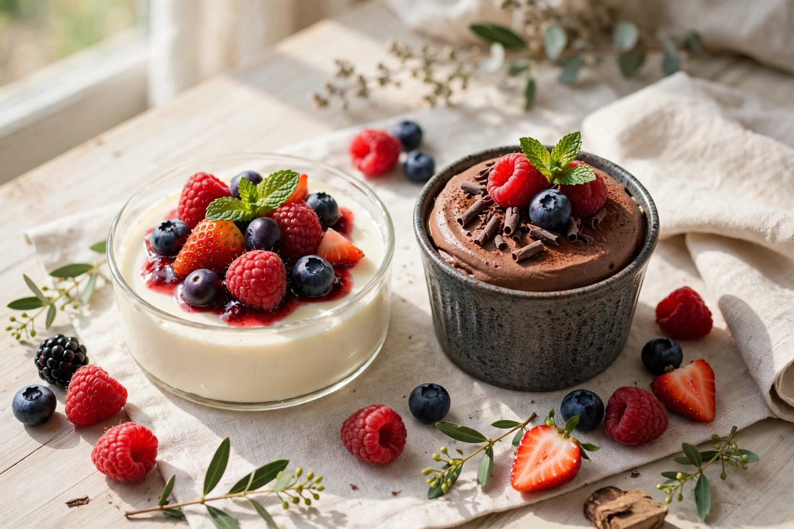
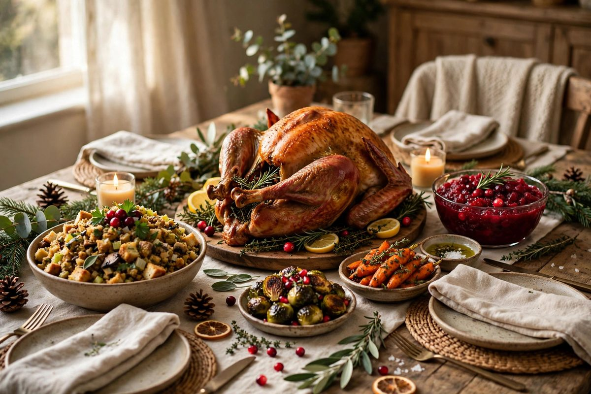

Gluten-Free Cooking That Tastes Like the Real Thing
Baking, bread, pasta, and family dinners without gluten — practical recipes and guides for celiac disease and gluten-free living, plus free tools to help you cook with confidence.
Important: if you have celiac disease or a wheat allergy, always check labels and look for certified gluten-free products. This site is general information only — talk to your doctor or a registered dietitian before changing your diet.
Free Gluten-Free Tools
Gluten-Free Recipe Filter
Filter our guides by category.
Gluten-Free Flour Converter
Convert a wheat flour amount to a gluten-free flour blend. Most recipes work with a 1-to-1 gluten-free blend, plus xanthan gum if the blend does not already include it.
Serving Scaler
Scale any recipe up or down. Enter the amount of one ingredient for the original servings, then choose the servings you want.
Ingredient Checker
Check whether a common ingredient is usually gluten-free. Always read the label, because brands and factories differ.
Gluten-Free Meal Planner
Pick a day and get a simple gluten-free meal plan.
All Gluten-Free Guides

Gluten-Free BakingHow to bake without gluten, the best flour blends, and why resting dough and xanthan gum matter.
 Gluten-Free Bread
Gluten-Free BreadHow to bake gluten-free bread at home, which flours work, and how to get a soft loaf that slices well.

Pasta AlternativesThe best gluten-free pasta and pasta alternatives, from rice noodles to courgette ribbons and lentil pasta.
 Gluten-Free Breakfast
Gluten-Free BreakfastEasy gluten-free breakfast ideas, from oats and eggs to pancakes and toast, without the sugar trap.
- Eating Out Gluten-Free
How to eat out safely without gluten, what to ask, which cuisines work best, and how to handle mistakes.
 Celiac Disease Basics
Celiac Disease BasicsWhat celiac disease is, how it is diagnosed, why a strict gluten-free diet matters, and how to live well with it.
 Gluten-Free Pizza
Gluten-Free PizzaHow to make gluten-free pizza with a crisp base, the best doughs, and topping ideas that work.

Gluten-Free CookiesHow to bake gluten-free cookies that are crisp, chewy, and not crumbly, with recipes and fixes.
 Gluten-Free Cakes
Gluten-Free CakesHow to bake moist gluten-free cakes, which recipes work best, and how to avoid a dry or sunken cake.

Gluten-Free MuffinsHow to bake light gluten-free muffins, the best flavours, and why resting the batter matters.

Gluten-Free PancakesHow to make fluffy gluten-free pancakes, the best flours, and sweet and savoury topping ideas.
 Gluten-Free Snacks
Gluten-Free SnacksHealthy gluten-free snacks for work, school, and travel, plus the packaged snacks to check carefully.

Gluten-Free Lunch IdeasEasy gluten-free lunches for home and work, from salads and soups to wraps and leftovers.

Gluten-Free Dinner RecipesFive easy gluten-free dinners the whole family can eat, from stir-fries to curries and pasta.
 Gluten-Free Flour Guide
Gluten-Free Flour GuideA guide to gluten-free flours: rice, sorghum, buckwheat, almond, chickpea, and how to blend them.
 Gluten-Free Oats
Gluten-Free OatsAre oats gluten-free? How to choose certified oats, and the best ways to use them.
 Cross-Contamination Guide
Cross-Contamination GuideHow to prevent gluten cross-contact at home, in shared kitchens, and when eating out.

Gluten-Free Shopping ListA complete gluten-free shopping list for the first shop, plus label-reading tips and budget advice.

Gluten-Free DessertsEasy gluten-free desserts, from flourless chocolate cake to fruit crumbles and pavlova.

Gluten-Free Holiday RecipesGluten-free recipes for holidays and celebrations, from Christmas dinner to birthday cake.